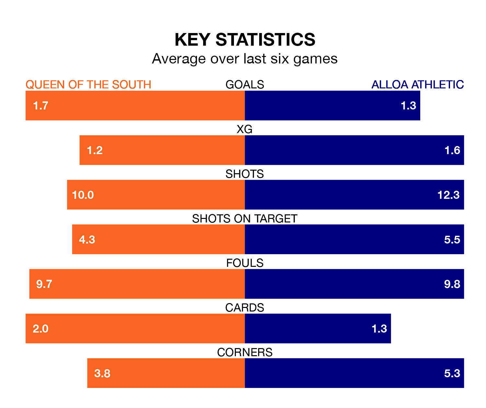

Queen of the South host Alloa Athletic on Saturday at Palmerston Park in League One.
In their last league match, on January 6, Queen of the South lost to Falkirk 1-0 away.
Alloa won, 3-1 at home against Edinburgh City, with Alistair Roy, Bobby Wales and Kevin Cawley on the scoresheet.
In the last 10 years, Queen of the South and Alloa have played each other on 27 occasions. Queen of the South won 10 of them, Alloa 11, and they drew six times.
On average, the Doonhamers scored 1.6 goals and Alloa 1.6 in those matches.
Their last meeting was on November 11, when Alloa won 1-0 at home.
In Peter Morrison, Alloa can rely on one of the league's safest pair of hands. He has kept four clean sheets in his 13 appearances this season, and only two other 'keepers – Falkirk's Sam Long and Hamilton Academical's Ryan Fulton – have been able to prevent the opposition scoring on more occasions in League One.
In Queen of the South's net, Gordon Botterill has one clean sheet in eight games.
With 24 goals in 18 games so far this season, Athletic are the league's third-lowest scorers with 1.3 goals per game. But they are conceding fewer than average too, letting in 27 goals at a rate of 1.5 per game.
The Doonhamers are also below average scorers, with 1.4 goals per game, compared to a league average of 1.6. They have conceded 1.6 goals per game.
The hosts are seventh in the table after 20 games, of which they have won seven and drawn two, earning 23 points.
The away team are two places ahead of Queen of the South in fifth, with seven wins and four draws putting them on 25 points.
Queen of the South are in mixed form in League One, with three wins and a draw from their last six games.
With three wins and two draws over that period, Alloa's form is slightly better – they have taken 11 points from 18, compared to the Doonhamers's 10.
Updated: 10:50, 10/01/24